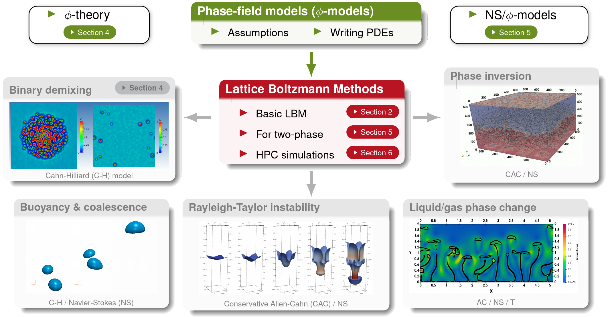
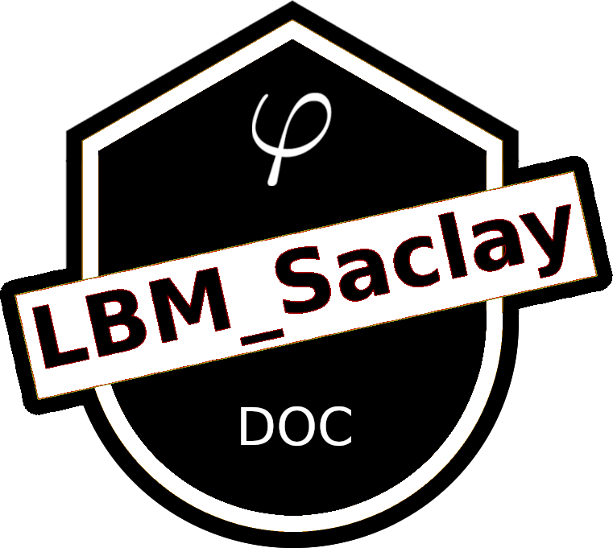

Welcome to LBM_Saclay’s documentation (last update Jun 24, 2026)
LBM_Saclay
{kind=link}
LBM_Saclay is a Computational Fluid Dynamics (CFD) code based on the Lattice Boltzmann Methods (\(\mathcal{LBM}\)). It is developed and maintained at STMF/LDEL laboratory from CEA/Saclay. Its main purpose is to simulate Multi-Phase and Multi-Component flows with interface-capturing models derived from the phase-field theory. You can run LBM_Saclay either on your own deskop or on supercomputers equipped with a multi-GPU partition (High Performance Computing). You will find in this documentation all you need to compile and run your first simulation either on CPU or on GPU. You will also find details on mathematical models, numerical schemes implemented in the code, and tutorials to develop your own models. The code is open source and can be downloaded on Codev-Tuleap repository. For that purpose, follow the instructions on Get access to the git repository.
Video gallery
Combining phase-field models with LBM and GPU is a very efficient approach for simulating multi-phase and multi-component flows. To illustrate what can be simulated, several videos are presented in different parts of this documentation. An overview can be found on Video gallery of simulations with LBM. 2D simulations with LBM_Saclay are presented in Run “Two-phase with fluid flows” PART B: Simulations. Applications of PART II: Mathematical models in LBM_Saclay and PART IV.B: Tutorials for developers are illustrated with videos.
Links for direct access
Introduction
Context and motivations
Two-phase flows, and more generally Multi-Phase and Multi-Component flows (MPMC), are involved in many physical phenomena such as spinodal decomposition, nucleation and growth, coalescence and breakup of droplets, rising bubbles & falling droplets, Marangoni flows, Rayleigh-Taylor instability, surfactants, Ostwald ripening and so on. Those phenomena occur in the daily life as well as in industrial problems. The first example described in Observations in nuclear glass is the nuclear glass which is used to confine radioactive wastes. We can also mention the corium in the context of severe accident of nuclear core reactors, microfluidics and flow and transport in porous media. Some of them are purely problems of fluid dynamics (rising bubbles or Rayleigh-Taylor instability). But others require a coupling between Navier-Stokes equations and thermodynamics.
Mathematical models: phase-field theory
To be thermodynamically-consistent and capture the interface between phases, we use the phase-field theory (see PART V.B. Fundamentals of phase-field theory) to derive the mathematical phase-field models (\(\varphi\)-models).
For hydrodynamic phenomena of two immiscible fluids such as Rayleigh-Taylor instability, rising bubbles, splashing droplets, capillary wave etc., the interface is captured by the Conservative Allen-Cahn model (or conservative levelset equation) which is coupled with the incompressible Navier-Stokes equations.
For thermodynamic phenomena such as spinodal decomposition, Ostwald ripening, solid-liquid phase change, the mathematical models are derived from the phase-field theory (\(\varphi\)-theory). Those models can be coupled with hydrodynamic equations in their incompressible formulation, or low Mach formulation (see Isothermal Navier-Stokes/Korteweg model).
Numerical schemes: Lattice Boltzmann Methods and C++ implementation
The Lattice Boltzmann Equation (LBE) is one discretization (among other) of the continuous Boltzmann equation in the kinetic theory of gases (see Overview of Lattice Boltzmann Methods). The Lattice Boltzmann Methods (LBM) are a set of numerical methods, based on that LBE, used as solver of Navier-Stokes equations and other conservative Partial Derivative Equations (PDEs). It is an alternative method to classical approaches for CFD such as finite element or finite volume methods. Its main advantage is to simulate simply different versions of Navier-Stokes equations (incompressible and low Mach formulations) and run efficiently on supercomputers. In this documentation, the section PART III: Lattice Boltzmann schemes in LBM_Saclay describes the LB methods which are implemented in LBM_Saclay.
LBM is a powerful method which is very efficient on Graphics Processing Units (GPUs). LBM_Saclay developers program neither in cuda (for Nvidia GPUs) nor opencl but in C++ standard language. With a simple modification of cmake options, the code can be compiled either on CPU architectures or on GPU devices (see Quick Start with LBM_Saclay). The Kokkos library is used for the portability of LBM_Saclay. You will find in PART IV.A: Guidelines for developers what you need to implement your own initial conditions or source terms. Tutorials are also under progress for more advanced programmers who wish to develop new kernels with new setup_collider functions.
Simulations: Multi-Phase and Multi-Component flows
LBM_Saclay can simulate Multi-Phase and Multi-Component (MPMC) flows such as binary demixing, buyoancy and coalescence of bubbles, Rayleigh-Taylor instability, liquid-gas phase change, etc. A quick look of those phenomena is presented on Fig. 7. Other examples are given in each subsection of PART II: Mathematical models in LBM_Saclay which describe the PDEs of each model and their closure relationships. The phase-field models that are implemented in LBM_Saclay, are based on different forms of Cahn-Hilliard and Allen-Cahn equations which are modified and adapted to problems to simulate e.g. crystal growth, dissolution of porous media, liquid-vapor phase change, etc.
Table of content
Table of Content of this introduction
{kind=link}

Fig. 7 Examples of two-phase flows simulated with LBM
LBM_Saclay workforce
{kind=link}
Many CEA collaborators have contributed to the development and validation of LBM_Saclay: P. Kestener, W. Verdier, T. Boutin, E. Stavropoulos-Vasilakis, H. de Gieter, C. Méjanès, T. Duez, H. Keraudren, C. Elharti, S. Dupuy, C. Bardet, S. Cappe, A. Genty, A. Laurens, P. Chavasse-Frétaz, Y. Janson, B. Peiffert, C. Renard, A. Cartalade.
Documentation
Content of this documentation
{kind=link}

The purpose of this documentation is to establish the link between parameters of input datafiles with mathematical models and numerical schemes. After a short description of PART I: User’s guide, the two-phase and multi-phase models are detailed in PART II: Mathematical models in LBM_Saclay. Next, the numerical schemes of those models are described in PART III: Lattice Boltzmann schemes in LBM_Saclay. The following section, PART IV.A: Guidelines for developers, is aimed at scientists who wish to implement their own models or add new equations. Finally, the last part PART V: course reminders contains introductions on basic fluid dynamics, lattice Boltzmann methods and phase-field theory.
Contribute to this documentation
You will find here Contribution guidelines for this documentation all you need to correct and add new sections of this documentation.
PART I: User’s guide
User’s guide
- PART I: User’s guide
- Quick Start with LBM_Saclay
- First simulations on ORCUS: example with GPU partition
- Practice of two-phase flows with test cases of
run_training_lbm - Practice of phase-field with test cases of
run_training_dissolution - Description of LBM_Saclay input file
- Methodology to set your own parameters in input file
- First simulations on Topaze (CEA-CCRT) - doc updated Nov 27th, 2024
- Beamer presentation with LyX and CEA template
PART II: Mathematical models
PART III: Lattice Boltzmann schemes
Lattice Boltzmann schemes in LBM_Saclay
PART IV: Guidelines for developers & Tutorials
Guidelines for developers
PART V: Reminders of fundamental concepts
Lattice Boltzmann Methods
- PART V.A. Lattice Boltzmann Methods
- Overview of Lattice Boltzmann Methods
- Equilibrium distribution functions
- Equilibrium distribution functions for incompressible Navier-Stokes equations
- Equilibrium distribution functions for Transport equations
- Variable change in LBE for source term
- Chapman-Enskog expansion for Navier-Stokes equations
Phase-field (or diffuse interface) theory
Section author: Alain Cartalade